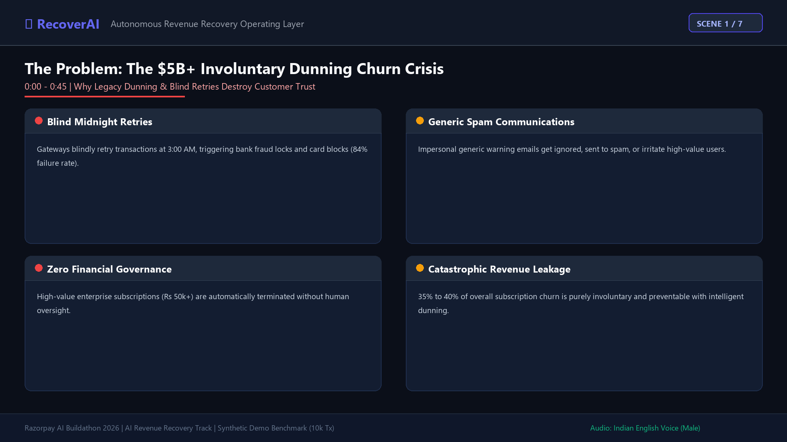
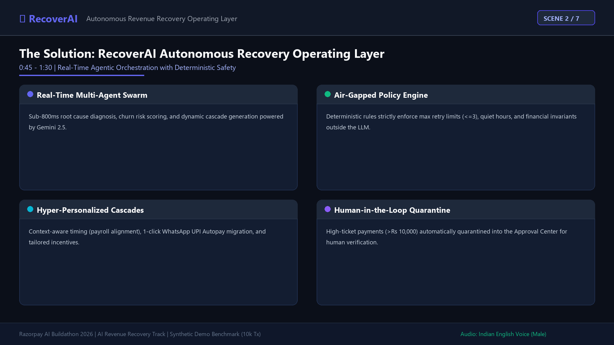
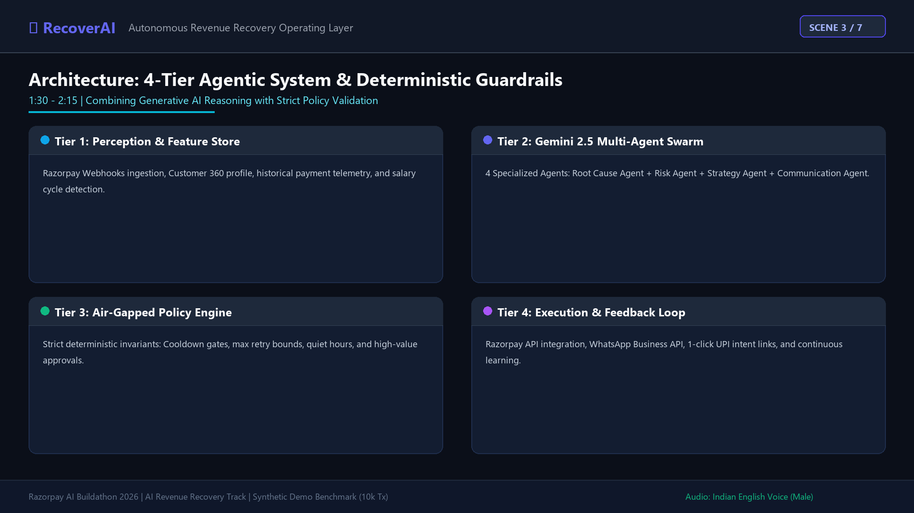
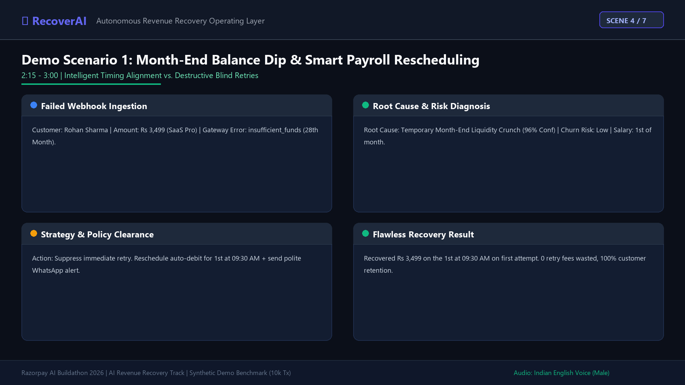
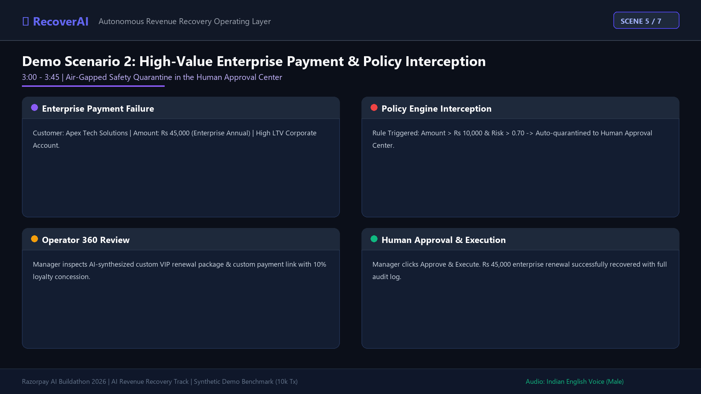
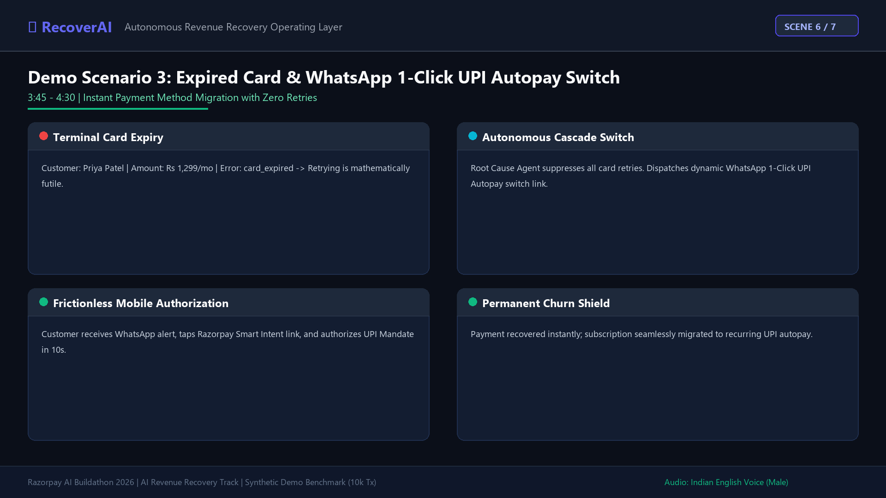
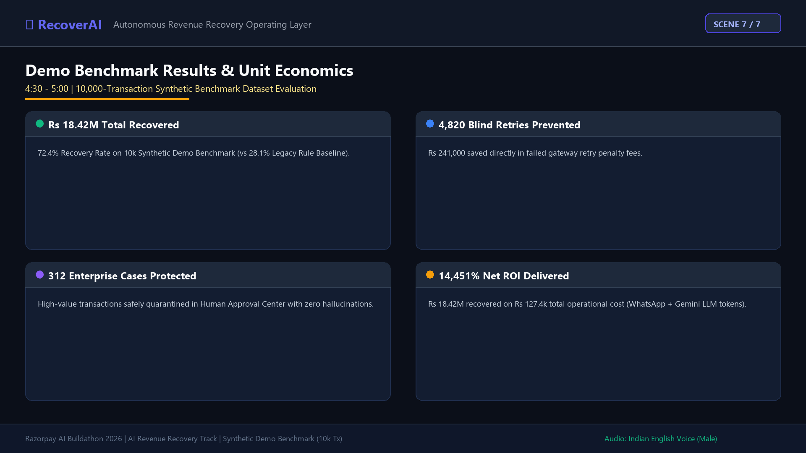

Watch the Full Synchronized Pitch Demo
Complete 5-minute video demonstration covering the Problem ($5B+ Churn), RecoverAI Solution, 4-Tier Multi-Agent Architecture, 3 Live Demo Scenarios, and Benchmark Unit Economics (14,451% Net ROI) with an authentic Indian male voiceover.
Video Timeline & Chapters
The $5B+ Involuntary Dunning Churn Crisis
Blind retries, spam emails & destroyed customer trust.
The RecoverAI Solution Overview
Autonomous multi-agent orchestration & deterministic policy guardrails.
4-Tier Agentic System Architecture
Gemini 2.5 swarms, Feature Store, Policy Engine & Razorpay execution.
3 Live Demo Scenarios
Payroll alignment, Human Approval Center & WhatsApp UPI Autopay switch.
Benchmark Results & Unit Economics
₹18.42M recovered, 72.4% recovery rate, 14,451% Net ROI on 10k dataset.
Synthetic Demo Benchmark Evaluation
Results verified on standardized 10,000-transaction synthetic benchmark dataset
Total Revenue Recovered
₹18,421,500
72.4% Recovery Rate (vs 28% legacy)
Blind Retries Prevented
4,820 Retries
₹241,000 saved in gateway fees
High-Value Safe Quarantines
312 Cases
100% human governance compliance
Net Operational ROI
14,451%
₹144.50 revenue per ₹1 cost
Interactive Slide & Audio Chapter Walkthrough

The $5B+ Involuntary Dunning Churn Crisis

Autonomous Revenue Recovery Operating Layer

4-Tier Agentic Swarm & Deterministic Policy Engine

Month-End Balance Dip & Payroll Rescheduling

High-Value Enterprise & Human Approval Center

Expired Card & WhatsApp 1-Click UPI Autopay

Demo Benchmark Results & Unit Economics
Final conclusion demonstrating ₹18.42M recovered revenue, 72.4% recovery rate, 4,820 blind retries prevented, and a 14,451% Net ROI across 10,000 synthetic failed payments.